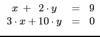

suivant: Construction d'un corps de
monter: Le calcul modulaire dans
précédent: Inverse d'une matrice de
Table des matières
Index
Résolution d'un système linéaire de
 /p : rref
/p : rref
rref permet de résoudre, dans
/p, un système
d'équations linéaires de la forme : Ax = B (voir aussi 6.53.3).
L'argument est une matrice formée par A bordée avec B comme dernier
vecteur colonne. Le résultat est une matrice formée de A1 et de B1
où, A1 a des zéros de part et d'autre de la diagonale et où,
le système A1x = B1 est équivalent à Ax = B.
Résoudre dans Z/13Z


On tape :
rref([[1, 2, 9]%13,[3,10,0]%13])
Ou on tape :
rref([[1, 2, 9],[3,10,0]])%13
On obtient :
[[1%13,0%13,3%13],[0%13,1%13,3%13]]
ce qui veut dire que x=3%13 et y=3%13.
Documentation de giac écrite par Renée De Graeve